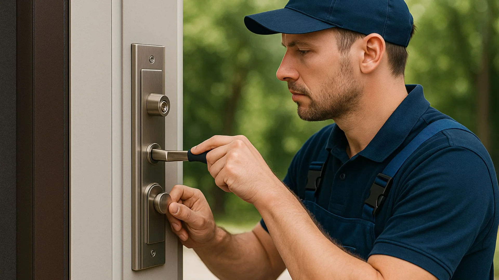
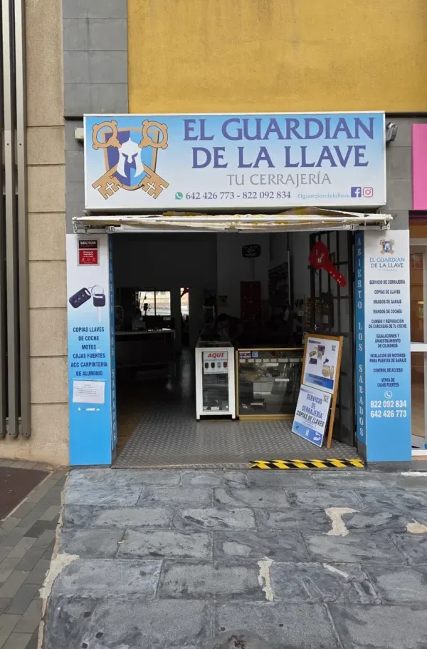
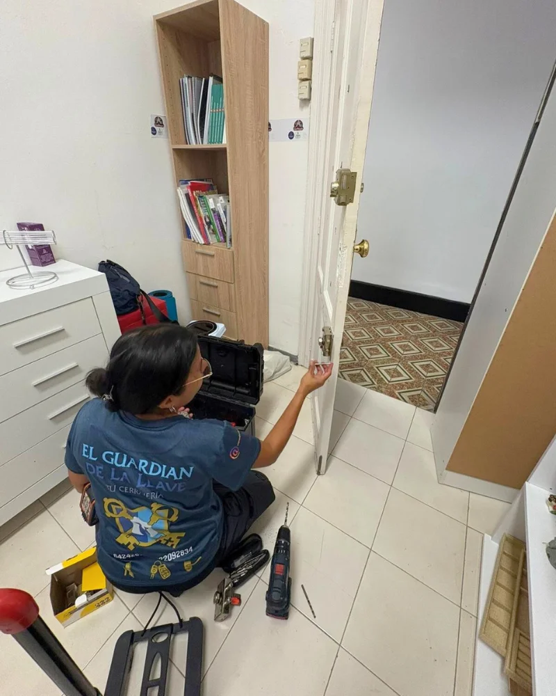
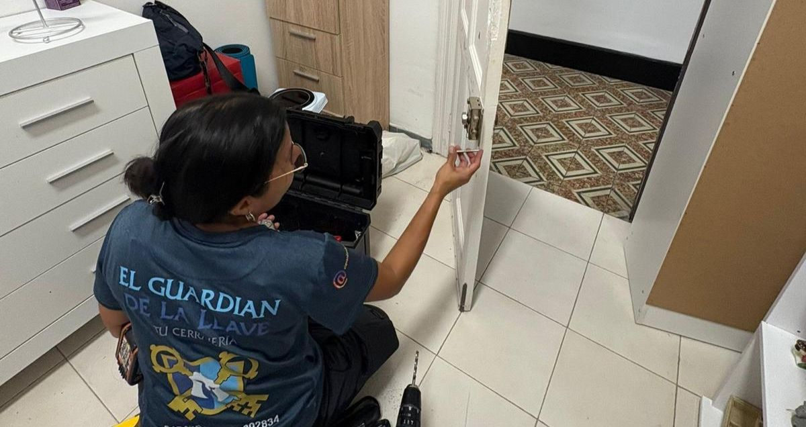

Apertura de puertas
Te has quedado fuera de casa o del coche. Abrimos sin daños siempre que es posible, a cualquier hora del día o de la noche.
Ver urgencias 24h
Cerrajero urgente 24 horas, apertura de puertas sin daños, cambio de cerraduras, duplicado de llaves y mandos de coche, cerraduras inteligentes y seguridad para tu hogar o negocio. A un solo paso, cuando más lo necesitas.

En El Guardián de la Llave resolvemos cualquier problema con tus cerraduras: desde una apertura urgente a media noche hasta el cambio completo de la seguridad de tu casa o negocio. Trabajamos con seriedad, rapidez y precios claros.
Contamos con tienda abierta al público en Santa Cruz de Tenerife —también los sábados— para copias de llaves, mandos de coche y moto, cajas fuertes y material de cerrajería.
Cubrimos la cerrajería de tu día a día y las urgencias que no avisan. Un único equipo para tu hogar, tu negocio y tu vehículo.
Te has quedado fuera de casa o del coche. Abrimos sin daños siempre que es posible, a cualquier hora del día o de la noche.
Ver urgencias 24hSustitución de cerraduras, bombines y cerrojos de alta seguridad. Ideal tras una mudanza, una pérdida de llaves o una avería.
Ver cerradurasCopias de llaves de casa, comunidad, seguridad y vehículo en nuestra tienda, con maquinaria profesional.
Ver llaves y mandosDuplicado y programación de llaves y mandos a distancia de coche y moto. Cambio de carcasa y pila.
Ver llaves y mandosCerraduras inteligentes y control de acceso para vivienda y negocio. Abre con código, móvil o huella.
Ver seguridadSistemas de alarma, mirillas digitales y cajas fuertes para proteger lo que más te importa.
Ver seguridadTranquilidad, seguridad y servicio urgente a un solo paso.
Desde tu llamada hasta que recuperas tu tranquilidad, todo claro y sin letra pequeña.
Nos cuentas qué te ha pasado por teléfono o WhatsApp. Valoramos el caso y te damos una orientación al momento.
Salimos cuanto antes hacia tu dirección dentro de la zona metropolitana, con la herramienta adecuada para tu cerradura.
Te explicamos el presupuesto antes de actuar y solucionamos el problema sin daños siempre que es posible.
Aperturas urgentes, cambios de cerradura y copias de llaves por toda la zona. Estas son algunas de nuestras intervenciones.




No fuerces la puerta ni la cerradura: puedes complicar la avería y encarecer la reparación. Llámanos y te orientamos antes de mover nada.
Atendemos urgencias las 24 horas en Santa Cruz de Tenerife, La Laguna y toda la zona metropolitana. Para copias de llaves y mandos, pásate por nuestra tienda.
Sí. El servicio de cerrajero urgente está disponible las 24 horas, todos los días del año, incluidos festivos. Llama al 642 42 67 73 y nos desplazamos cuanto antes.
En la mayoría de los casos sí. Trabajamos con técnicas de apertura sin daños para no estropear ni la puerta ni la cerradura. Solo cuando es imprescindible (por seguridad o por el tipo de bombín) se recurre a la sustitución.
Atendemos Santa Cruz de Tenerife, La Laguna, Candelaria, Radazul, Tabaiba, Tegueste y La Esperanza. Si tienes dudas sobre tu zona, escríbenos por WhatsApp.
Sí. Duplicamos llaves de coche y moto, copiamos y programamos mandos a distancia y sustituimos carcasas y pilas. También trabajamos mandos de garaje.
Sí, contamos con local abierto al público en Santa Cruz de Tenerife, también los sábados, para copias de llaves, mandos, cajas fuertes y material de cerrajería.
Llámanos para una urgencia o pásate por la tienda para tus copias de llaves y mandos. Te atendemos por teléfono, WhatsApp o en el local.